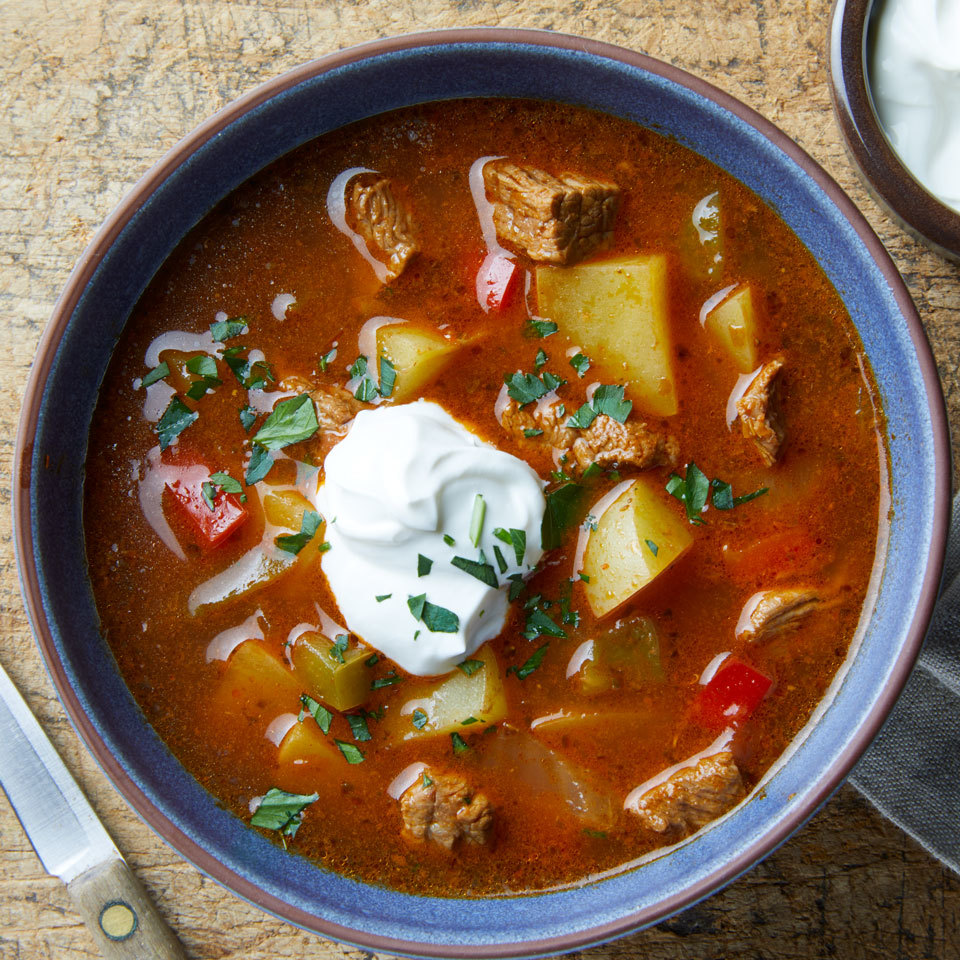

Goulash Soup

Description
Get all the flavors of classic goulash in a warming, hearty soup. This easy one-pot meal can be on the table in less than an hour.
Ingredients
- 1 tablespoon extra-virgin olive oil
- 1 medium onion, diced
- 1 medium green bell pepper, diced
- 1 medium red bell pepper, diced
- 12 ounces beef sirloin, trimmed and cut into 1/2-inch pieces
- 1 tablespoon Hungarian paprika
- 1 teaspoon dried marjoram
- 1 teaspoon caraway seeds, lightly crushed
- ½ teaspoon salt
- ¼ teaspoon ground pepper
- 4 cups low-sodium beef broth
- 12 ounces yellow potatoes, cut into 1/2-inch pieces
- 1 cup canned crushed tomatoes
- 1 teaspoon red-wine vinegar
- 4 tablespoons sour cream, divided
- 2 tablespoons chopped fresh parsley, divided
Steps
- Heat oil in a large saucepan over medium-high heat.
- Add onion, green pepper and red pepper; cook, stirring, until starting to soften, about 3 minutes.
- Add beef, paprika, marjoram, caraway seeds, salt and pepper.
- Cook, stirring, until the beef is no longer pink, 3 to 5 minutes.
- Stir in broth, potatoes and tomatoes; bring to a boil.
- Reduce heat to maintain a simmer and cook, uncovered, stirring occasionally, until the potatoes are tender and the soup has thickened a bit, about 20 minutes.
- Stir in vinegar.
- Divide the soup among 4 bowls and garnish each with 1 tablespoon sour cream and 1/2 tablespoon parsley.